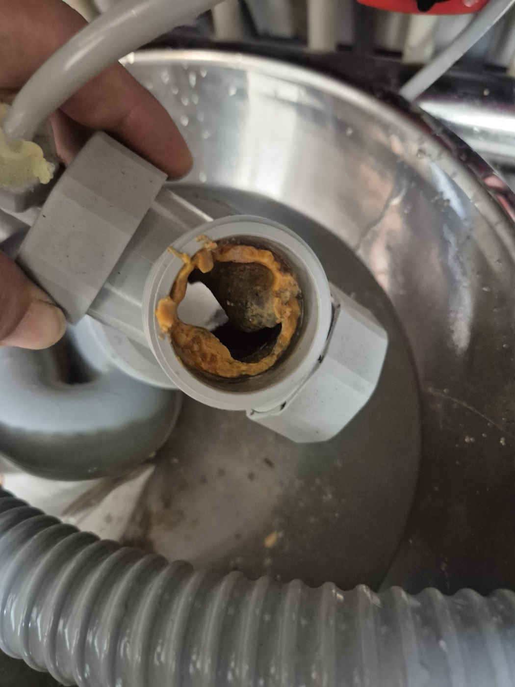

천안동남구 지역에서도 하수구막힘은 기름 찌꺼기, 음식물 찌꺼기, 노후 배관 스케일이 주요 원인입니다. 아래 예방법을 먼저 확인해 보시고, 역류나 악취가 반복된다면 전화로 접수해 주세요. 현장 진단 후 견적에 동의하신 뒤에만 작업이 진행됩니다.

천안 불당동 시공사례 사진입니다 · 제거한 배관 이음부에 낀 기름때·스케일
천안동남구 하수구막힘, 서북구와 원인은 비슷합니다
천안동남구도 서북구와 마찬가지로 기름과 음식물 찌꺼기가 배관에 쌓이며 막힘이 시작됩니다. 아파트 단지든 상가든, 배출되는 이물질의 종류만 다를 뿐 결국 배관 벽에 쌓여 물길을 좁힌다는 원리는 같습니다.
셀프 예방수칙
- 기름은 따로 모아 버리고 배수구에 흘려보내지 않기
- 배수구 거름망을 자주 비우기
- 배수 지연 등 초기 신호를 놓치지 않기
- 공동 배관을 쓰는 경우 이웃과 함께 관리하기
이럴 땐 전문업체를 불러야 합니다
잠깐 뚫려도 금방 재발한다면 배관 안쪽 깊숙한 곳까지 이물질이 쌓인 상태일 수 있습니다. 내시경 카메라로 정확한 위치를 확인한 뒤 고압세척으로 마무리하는 것이 안전합니다.
접수 안내
천안동남구 지역 하수구막힘 관련 문의는 전화로 접수해 주세요. 접수 건은 확인 후 신속하게 연결해 안내해 드리며, 자세한 내용은 자주 묻는 질문에서도 확인하실 수 있습니다.